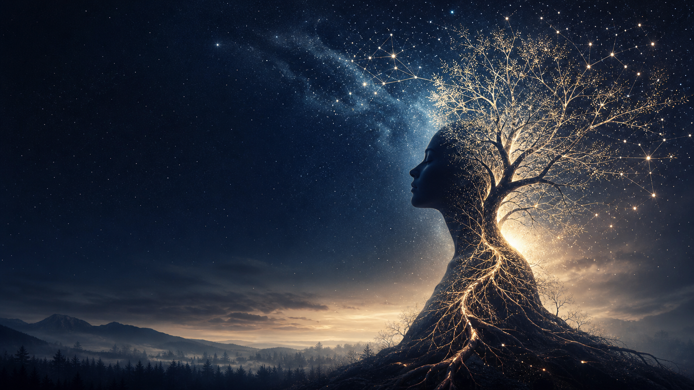

Космическая
психология
Космическая Психология DREVO — это мировоззренческая система, объединяющая научные знания, философию, культурные традиции, духовный опыт и изучение закономерностей человеческой жизни. Она называется Верой, потому что не претендует на абсолютную научную точность, а помогает человеку осмыслить своё место в семье, обществе, природе и Вселенной, найти внутренние ориентиры и направить свои знания, способности и поступки на созидание и развитие.
Всё взаимосвязано
Космическая психология — это междисциплинарное направление, изучающее человека как часть единой системы природы, общества и Вселенной. Она рассматривает психику не изолированно, а во взаимосвязи с биологическими, социальными, культурными, экологическими и астрономическими факторами.
Цель космической психологии — сохранение и развитие ментального здоровья, раскрытие потенциала личности, укрепление семьи и общества, а также формирование гармоничных отношений человека с окружающим миром.
Основные направления исследования:
наследственность, родословная и влияние поколений;
развитие личности, характера и ценностей;
ментальное, эмоциональное и физическое здоровье;
влияние семьи, культуры, традиций и коллективного сознания;
воздействие природных циклов и астрономических явлений на человека;
взаимодействие человека с окружающей средой и экосистемами;
изучение феноменов ауры, биополей и других моделей взаимодействия, предлагаемых различными философскими и духовными традициями;
исследование творчества, интуиции, сознания и духовного развития.
При этом научно подтверждённые знания, медицинская диагностика и психология рассматриваются как основа практической работы, а философские и духовные модели — как предмет исследования и мировоззренческого осмысления, а не как установленный научный факт.
Космическая психология является естественным продолжением и развитием Новой психологии DREVO. Она полностью опирается на её базовые принципы, сохраняя представление о человеке как о единой живой системе, в которой взаимосвязаны тело, психика, сознание, наследственность, социальная среда, природа и духовное развитие.
При этом космическая психология расширяет границы исследования. Она рассматривает человека не только как часть семьи, общества и биосферы, но и как часть более широких природных и космических процессов. В её поле внимания входят влияние астрономических циклов, геофизических факторов, коллективного сознания, культурных традиций, информационной среды, а также вопросы взаимодействия человека с окружающим миром на различных уровнях организации.
Новая психология DREVO является фундаментом космической психологии, а космическая психология — её расширением, объединяющим знания психологии, биологии, экологии, антропологии, нейронаук, астрономии, философии и других дисциплин для формирования целостного понимания человека и его места во Вселенной.
Материалы проекта
Все тексты исходного документа распределены по тематическим страницам.
Законы развития
Двенадцать закономерностей целостного роста личности.
Открыть →02Исследования
Человек, здоровье, среда, таланты и природные ритмы.
Открыть →03Система DREVO
Многомерная структура человека и практики развития.
Открыть →04О Вере
Почему Вера остаётся открытой знанию, сомнению и проверке.
Открыть →05Космическая Вера
Принципы, ценности, служение и единая система DREVO.
Открыть →06Презентация
Краткий визуальный маршрут по ключевым идеям.
Открыть →07Том I · Духовные основы
Полный текст о духовном понимании, ценностях, чувствах, вере, культуре и творчестве.
Открыть →08Том II · Практическая гармония
Полный текст о качествах человека, этике, природе, здоровье и развитии сообщества.
Открыть →09Гармония жизни
Основы, принципы и практическое применение концепции DREVO.
Открыть →Человек — не изолированная личность, а часть семьи, Рода, общества, природы, Земли и Вселенной.